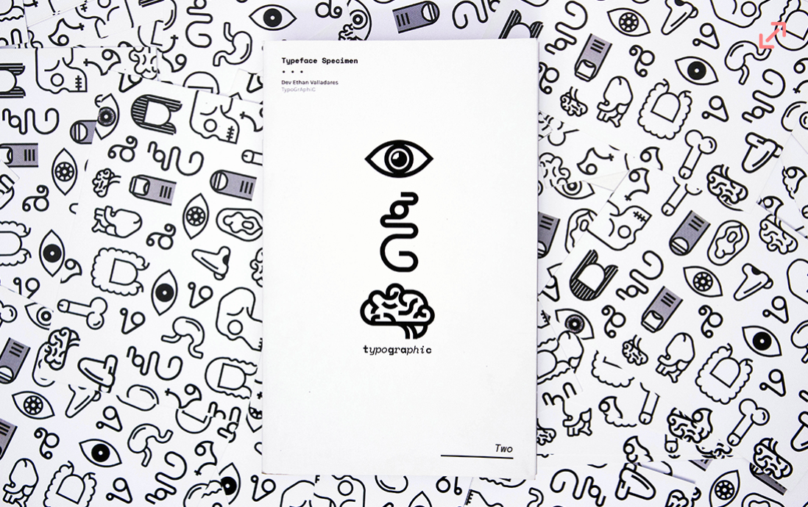
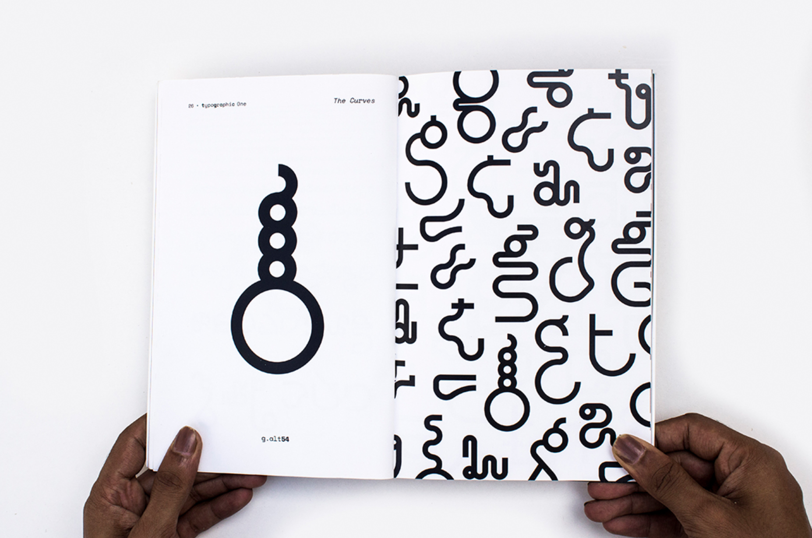
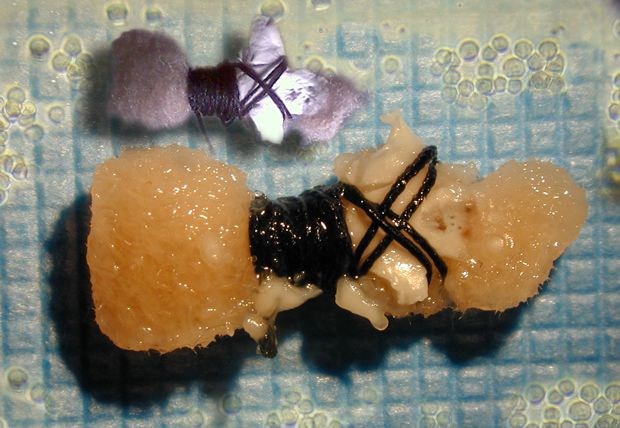
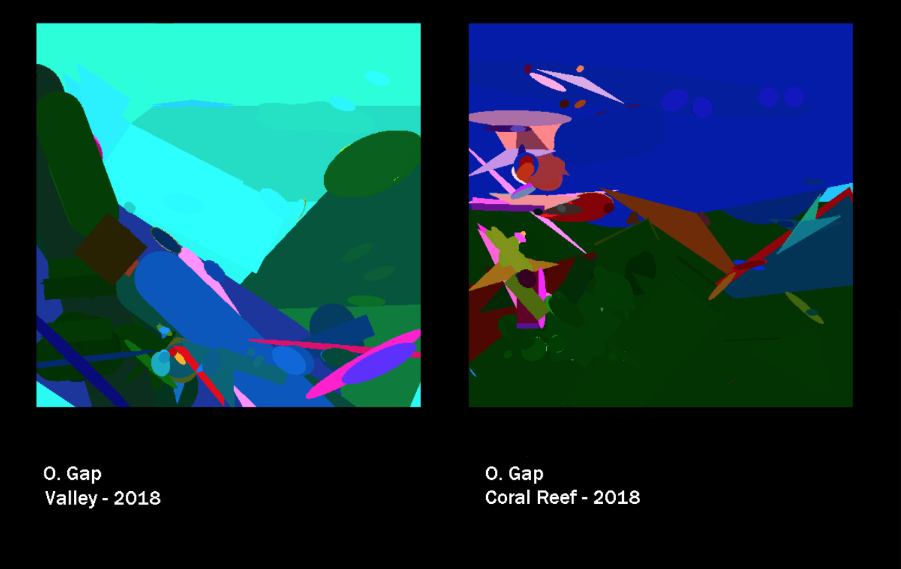
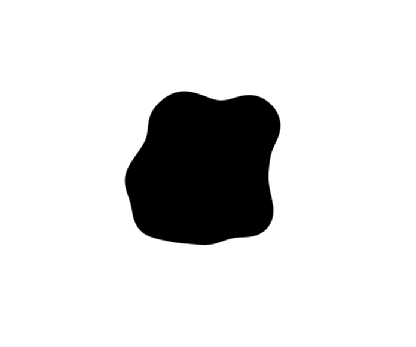
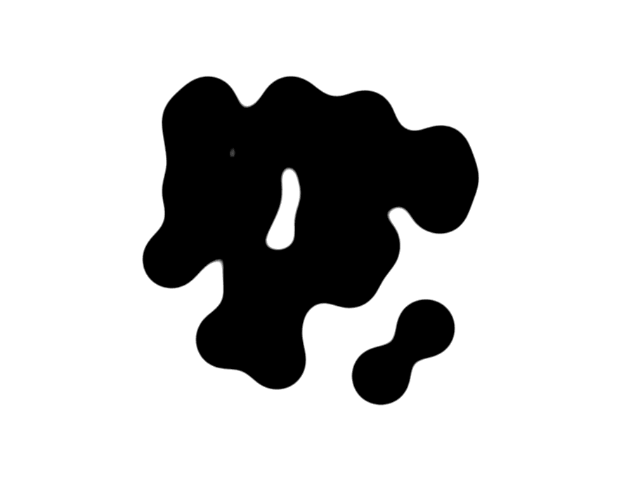
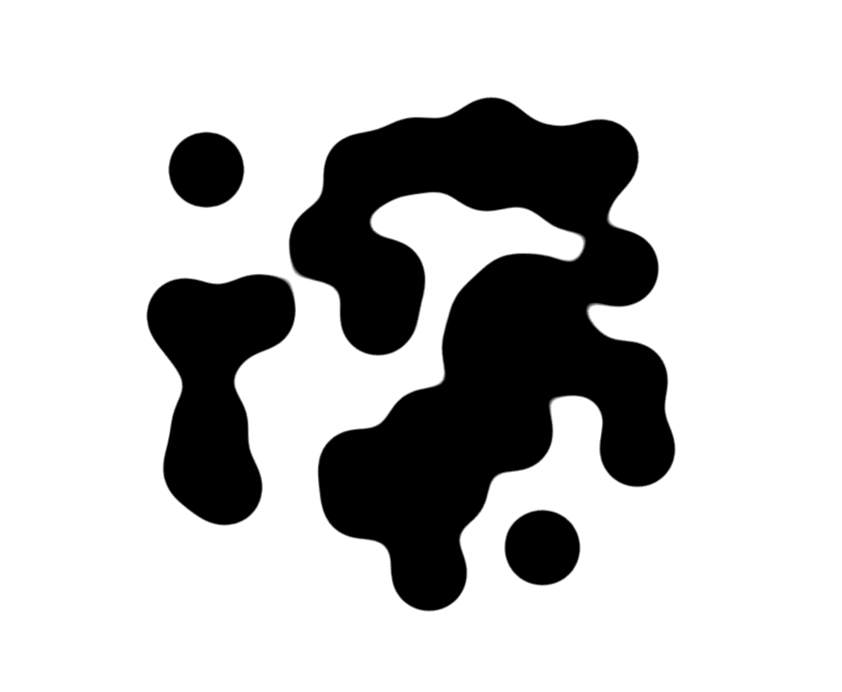

This week - Relationships between Technology and Nature:
I am interested in investigating the ways technology and nature can interact.
I don't believe they are opposites, and maybe could find something interesting
in investigating the threads that connect them.
Ideas for routes of investigation
- Bio Art
- Genetic Algorithms
- Math Structures in Nature
- Psychological assumptions: Inkblots / Rorschact Test


By a student, Dev Ethan Valladares, a mutating typeface of a, t, c, g characters
that model the structures of dna. The typeface characters change and grow to
form genetic structures. Merging characters into ligatures creates "genetic"
traits, like eye color and shape.

link
Bio Art weirdness - human tissue, grown and cultured in a lab, then shaped into dolls.
Brings questions of living and dying into art. The cultures are maybe alive, maybe dead,
but there is no clear distinction. Interested in how we can simulate death and life.
Its like a game, in a weird way. And at the end of each art show, the dolls are touched
and killed - their intended use kills them. Strange but thought provoking




link
Genetic algorithms are something I have always been interested in.
The core concept is that you use the laws of fitness survival and evolution
to modify generations of code, until the code gives a result that is close
enough to the desired goal. The cool thing about it is that besides deciding
how it starts and what you are hoping for, the actual results might be wildly
varied or unpredictable. This example uses a genetic algorithm to generate
vector shapes and a fitness test that matches the image to names objects.
There is nothing art about this, but it is a visually interesting start!
TO DO: feed randomly generated Rorschact blots from my typeface into a fitness matcher,
like the ones used in this article, to get a set of symbols!
Back Home